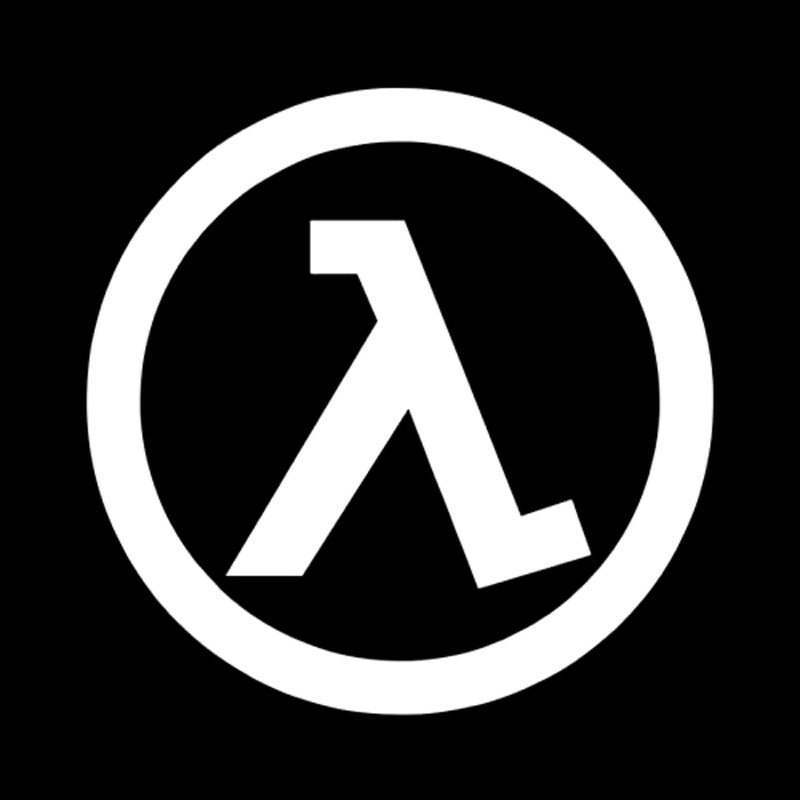

|  | Ega Fashion |
Adidas adalah sebuah perusahaan sepatu Jerman. Perusahaan ini dinamakan atas pendirinya, Adolf (Adi) Dassler, yang mulai memproduksi sepatu pada 1920-an di Herzogenaurach dekat Nuremberg. Rancangan baju dan sepatu perusahaan ini biasanya termasuk tiga strip paralel dengan warna yang sama, dan motif yang sama digunakan sebagai logo resmi adidas. Adidas adalah perusahaan pakaian olahraga terbesar di Eropa dan kedua terbesar di dunia setelah Nike.
Selama lebih dari 80 tahun lamanya grup Adidas telah menjadi bagian dari dunia olahraga di segala bidangnya dengan menawarkan sepatu, pakaian serta beragam aksesori pelengkap olahraga yang bernilai seni pada setiap produknya. Sekarang, grup Adidas telah mengglobalisasi dan menguasai di bidang industri produk olahraga dan menawarkan portfolio yang begitu luas dari segi produk di seluruh dunia. Strategi grup Adidas sangatlah simpel: memperkuat bran secara terus menerus dan mengimprovisasi posisi kompetitif serta keuangan mereka. Aktivitas perusahaan dan lebih dari 150 cabangnya dipantau langsung oleh pemimpin grup di Herzogenaurach, Jerman. Tertanggal 31 Desember 2009, grup Adidas tercatat mempekerjakan sebanyak 38.982 orang selama setahun penuh.
Juga ada pendapat, bahwa sebetulnya Adidas adalah sebuah singkatan dari sebuah kalimat, yaitu "All day I dream about sports" (Tiap hari aku bermimpi tentang olahraga). Pendapat ini disetujui banyak orang mengingat bila tiap huruf pertama dari kata yang terkandung dalam kalimat diambil lalu disusun, akan membentuk kata Adidas, dan juga maknanya yang mendukung semangat olahraga.
tes tes bla bla bla
Desain Web Copyright © 2017 Ortega Daniel